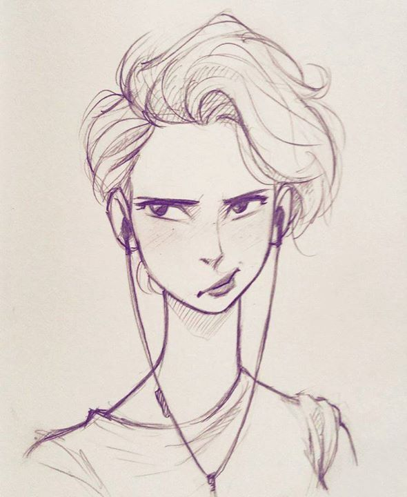

Blogas, sukurtas mano įdomumui (ir informatikos namų darbams :') ) Pagrindinis blogo tikslas yra sutvarkyti mano mintis ir pasidalinti tuo, kas man patinka arba nepatinka, ir gerai praleisti laiką internete!!! Kol kas bloge galima rasti receptą ir dainų sąrašą, įdomumui ir toliau kelčiau įrašų į blogą, bet labai jau tingiu ♥
Nerida ☺